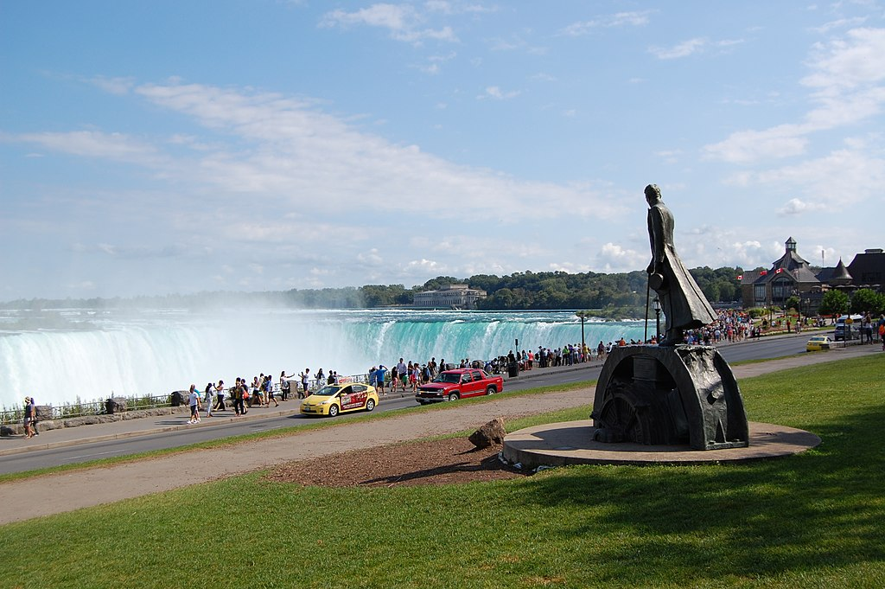

Memorials
- Nikola Tesla Corner in New York
- Nikola Tesla statue in Niagara Falls,Ontario
- The Nikola Tesla Memorial Centre in Smiljan ,Croatia opened in 2006 it features a statue of Tesla designed by sculptor Mile Blažević
- A plaque depicting a relief Of Nikola Tesla is present on the Old City Hall(Zagreb)in Zagreb,Croatia's capital,commemorating his proposal to bulid an alternating current station,which he made to the city council.The plaque quotes Tesla'statement,in the building on 24 May 1892 which reads:"As son of this country,I consider it my duty to help the City Of Zagreb in every way,either through action"(Croatian:"Smatram svojom dužnošću da kao rođeni sin svoje zemlje pomognem gradu Zagrebu u svakom pogledu savjetom i činom")
- On 7 July 2006 ,on the corner of Masarykova and Preradovićeva streets in Lower Town in Zagreb ,a monument of Tesla is unveiled .the moumnet was designed by Ivan Meštrović in 1952 and was transferred from the Zagreb - based Ruđer Bošković Institute where it had spent prevoius decades.
- A moumnet to Tesla was established at Niagara Falls,New York.This monument portraying Tesla reading set of notes was sculpted by Frano Kršinić.It was presented to the United States by Yugoslavia in 1976 and is an identical copy of the mounument satding in front of the Universtiy of Belgrade Faculty of electrical Engineering
- A monument of Tesla standing on a portion of an alternator was established at Quenn Victoria park in Niagara Falls, Ontario, Canada.The mounument was officially unvelied on 9 July 2006 on the 150 anniversary of Tesla'Birth.The monument was sponsored by St.George Serbian church ,Niagara falls, and designed By Les Drysdale of Hamilton,Ontario.Drysdale'design was the winning design an international competition.

- Amoumnet of Tesla was unveiled in Baku in 2013.Presidents Ilham Aliyev and Tomislav Nikolić attended a cerremony of unveiling
- In 2012 Jane Alcron,president of the nonoprofit group Tesla Sceince Centar at Wardenclyfe and Matthew Inman , creator of web catron The Oatmeal ,raised a totla of $2,220,511 - $ 1,370,511froma campaign and 850,000 from a New York grant-to buy the property where Wardebclyffe Tower once stood and eventually turned in museum.The group began negotiations to purchase the Long Island property From Agfa Corporation in 2012.The purchase was completed in May 2013.The persavtion effort and history of Wardenclyfe is the subject od documentary by Tesla activist/filmaker Joseph Sikorski called"Tower to the Pepole People-Tesla's Dream at Wardenclyfe Continues.